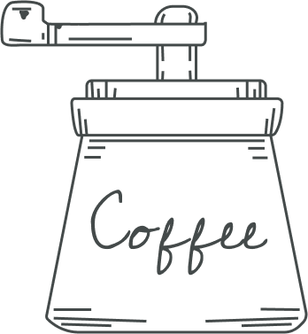

Only one moment - when the barista reaches out over the bar to
transfer the cup to the outstretched hand of the buyer. But this is
exactly the moment when a connection arises between us and our
guests. And we strive to do our best to maintain this connection -
starting with our commitment to selecting the highest quality coffee
in the world and ending with how we interact with guests and
organizations to fulfill our obligations.
Samwayle